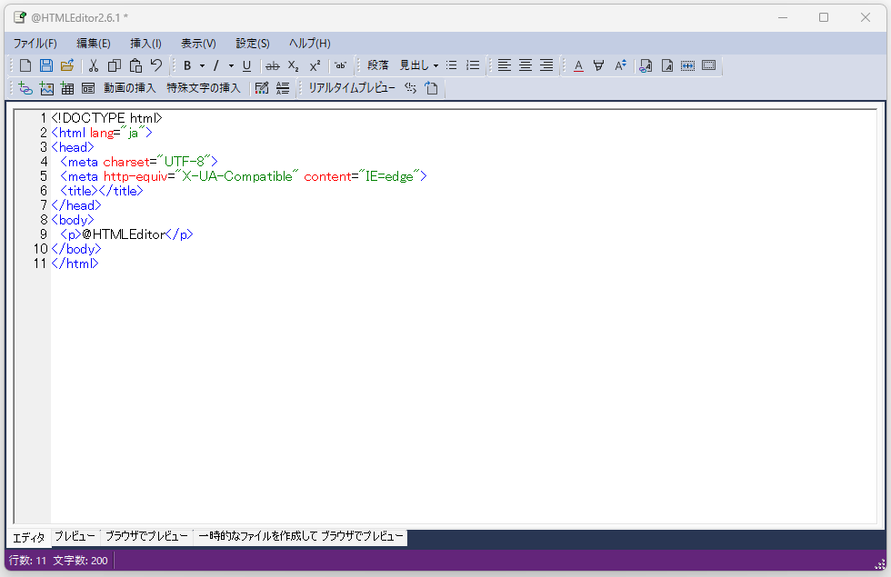

@HTMLEditor2
概要
「@HTMLEditor2（アットHTMLエディター2）」は、HTMLの基本的なタグ(<p>や<h1>など)を簡単に挿入できるシンプルなHTML作成支援ソフトです。

注意
このソフトウェアはプログラミング初心者のなかやんが作成したものであり、個人で使用した分には問題ありませんでした。
2025/3/3 時点ではWindows ディフェンダーと最新版ESET両方で脅威は検出されていません。ただし、個人で作成したソフトのため自己責任で行ってください。
ダウンロードとインストール
以下のリンクをクリックし、zipファイルを展開してください。展開したフォルダ内に「@HTMLEditor2.6.2.exe」がありますので、それをクリックすることでソフトウェアを実行できます。インストールする必要はありません。